11. Ay'a Özgü Eşitlemeler ya da Eşit Dağılımlar Tablosunun Açıklanması
Buna göre Ay'ın hareketlerini saptama yolunun şu örnekten genel hatlarıyla anlaşılabileceğini düşünüyorum; zira CEG üçgeninde GE ve CE kenarları her daim aynı kalır. Fakat sürekli değişen saptanmış GEC açısına göre geri kalan GC kenarını ayrıklığın düzeltilmesinde kullanılan eşitleme olarak ECG açısıyla birlikte saptarız.
Daha sonra CDG üçgeninde DC ve GC kenarları DCG açısıyla birlikte hesaplandığından, aynı şekilde Dünya'nın merkezinde D açısı –hakiki ve görünen hareket arasındaki açısal fark– ortaya çıkmış olur. Bütün bu veriler hazır olduğuna göre, altı sütundan oluşan bir eşitlemeler tablosu oluşturacağız. Daireye ait rakamlardan oluşan iki sütundan sonraki sütunda küçük dış tekerleme eğrisinden kaynaklanan ve iki aylık devinime uygun, ilk dış tekerleme eğrisinin düzenli hareketinden farklı eşitlemeler yer alacak. Sonraki dördüncü sütunu oluşan zaman için boş bırakıp evvela beşinci sütunu, Güneş'le Ay'ın ortalama karşı konumları ve kavuşumlarında beliren daha büyük –en büyüğü 4º56'dır– ve ilk dış tekerleme eğrisinin neden olduğu eşitlemelerle dolduracağız. Sonraki sütunda, yarımayda beliren eşitlemelerin önceki eşitlemeleri aştığı; en büyük aşımın da 2º44' olduğu sayılar yer alacak. Fakat diğer aşımlar da değerlendirilebilsin diye orantılı dakikalar hesaplandı ve bu onların oranıdır. Buna göre küçük dış tekerleme eğrisinin teğet noktasında beliren diğer aşımlarla alakalı olarak 60 dakika için 2º44'yı alırız. Bu yolla, aynı örneğe göre CD 10.000 birimken, CG 1123 birimdir. Ve bu, küçük dış tekerleme eğrisinin teğet noktasında en büyük eşitlemenin 6º29' olmasını sağlar; bu, ilk eşitlemeden 1º33' kadar fazladır. Fakat 2º44'nın 1º33'ya oranı, 60'nın 34'ya oranına eşittir; böylece 90º18'lık yaya tekabül eden aşıma göre küçük dış tekerleme eğrisinin yarım çemberinde beliren aşımın oranını elde etmiş oluruz. O halde tablonun bu bölümünde 90ºye tekabül eden 34 dakikayı kullanacağız. Bu şekilde tabloda işlenen yaylarla orantılı dakikaları bulmuş, dördüncü sütuna yerleştirmiş olacağız. Son olarak son sütuna kuzey ve güney enleminin derecelerini ekleyip aşağıda onlardan da bahsedeceğiz. Çalışmamızın yararlı ve kullanıma uygun olması hedefi bütün bu verileri bu sıraya koymamızı gerektirdi.
12. Ay'ın Rotasının Hesaplanması Üzerine
Buna göre Ay'ın görünen hareketini hesaplama yöntemi şu ana kadar gösterildiği ve aşağıda gösterileceği gibi açıktır. Bize önerilen aradığımız Ay konumunun zamanını eşit zamana uyarlayacağız. Bu zamanın yardımıyla, İsa takviminden ya da saptanan başka bir başlangıçtan itibaren Güneş'le ilgili olarak yaptığımız gibi, sonunda tanımlayacağımız enlemin, ayrıklığın ve boylamın ortalama hareketlerinin gelişimini izleyeceğiz ve bizden önceki bir zamanda belirlenen tekil hareketlerin konumlarını açıklayacağız. Daha sonra tabloda Ay'ın düzenli boylamının iki katını ya da Güneş'ten açısal mesafesinin yine iki katını ve üçüncü sütunda bulunan eşitlemesini arayıp sonraki sütunda bulunan orantılı dakikaları kaydedeceğiz. Buna göre tabloya girdiğimiz rakam birinci sütunda bulunuyorsa ya da 180ºden küçükse, eşitlemeyi Ay ayrıklığına ekleyeceğiz; fakat 180ºden büyükse ya da ikinci sütunda yer alıyorsa eşitlemeyi aynı ayrıklıktan çıkaracağız. Böylece Ay'ın düzeltilmiş ayrıklığını ve en yüksek apsitten hakiki açısal mesafesini elde etmiş olacağız; bu mesafeyi tekrar tabloya girerek beşinci sütunda ilgili eşitlemeyi saptayacağız ve ikinci dış tekerleme eğrisinin eşitlemeye eklediği altıncı sütundaki aşımı ve ilk dış tekerleme eğrisini saptayacağız. 60 dakikalık orana uygun olarak alınan bu aşımın orantılı bölümü her daim bu eşitlemeye eklenir. Düzeltilen ayrıklık 180ºden ya da bir yarım daireden küçük olursa, toplam boylamın ya da enlemin ortalama hareketinden çıkarılır; ayrıklık büyük olursa bu sefer eklenir. Bu şekilde Ay'ın, Güneş'in ortalama konumundan hakiki mesafesini ve enlemin düzeltilmiş hareketini elde ederiz. O halde Ay'ın hakiki konumu, ya Güneş'in basit hareketinde Koç'un ilk yıldızından mesafesi ya da devinmenin eklenmesi veyahut bileşik harekette ilkbahar ekinoksundan mesafesi ile bulunmuş olacaktır. En nihayetinde enlemdeki düzeltilmiş hareket sayesinde tablonun yedinci yani sonuncu bölümünde Ay'ın ekliptikten mesafesini veren enlemin derecelerini elde etmiş oluruz. Enlemin hareketi tablonun ilk bölümünde bulunduğunda, yani 90ºden küçük ya da 270ºden büyükse, enlem kuzeyde; aksi durumda güneyde olacaktır. Buna göre Ay da kuzeyden 180ºye iniyor olacaktır ve daha sonra dairenin geri kalan kısmını tamamlayana dek güney sınırından yükselecektir. O halde Dünya'nın rotası nasıl Güneş'in etrafındaysa Ay'ın görünen rotası da Dünya'nın merkezinin etrafında yer alır.
13. Ay Enleminin Hareketi Nasıl Araştırılır ve Gösterilir?
Şimdi de Ay hareketinin enlemdeki oranını saptamamız gerekir; fakat bunun anlaşılması, beraberindeki ayrıntılarla birlikte oldukça karmaşık olduğundan, daha zor görünüyor. Daha önce de dediğimiz gibi, Ay'ın iki dış tekerleme eğrisi her haliyle birbirine benzer ve eşit olsaydı, yani gölgede kalan kısımlar kuzeye ve güneye göre aynı konumda ve aynı yükselen ve alçalan ekliptik kesitinde olsaydı; Dünya'dan ya da en yüksek apsitten uzaklığı da aynı olurdu; zira Ay'ın bu düzende tüm enlem çemberlerini hakiki hareketle tamamladığı anlaşılır. Buna göre Dünya'nın gölgesi konik olduğundan ve bir dik koni tabanına paralel bir düzlemle kesilirse, kesit, daha küçük bir çemberdir ve tabandan daha uzak mesafede, daha büyük bir daireyse tabandan daha yakın mesafededir; eşit mesafede ise benzer şekilde eşittir. Ve buna göre Ay, Dünya'dan eşit uzaklıklardayken, eşit gölge çemberleri kat eder ve görüş açımıza eşit diskler sokar. Buradan hareketle Ay, gölgenin merkezinden eşit uzaklığa göre aynı yönde eşit parçalarla görünerek eşit enlemlerden emin olmamızı sağlar; Ay, bu enlemlerden kaçınılmaz olarak ilk konumuna geri döner ve artık aynı ekliptik düğümünden, eşit bir aralık kadar uzaktadır. Fakat bu, özellikle konum bu koşullardan ikisini yerine getirdiğinde geçerlidir. Buna göre Ay'ın Dünya'ya yaklaşması ya da ondan uzaklaşması gölgenin toplam büyüklüğünü, neredeyse hiç anlaşılmayacak kadar belirsiz bir ölçüde değiştirir. Güneş'le alakalı olarak da söylendiği gibi, iki tutulma arasındaki süre daha fazla olursa, Ay'ın enlemdeki hareketini daha kesin bir şekilde kavrarız. Fakat bu koşullara uyan iki tutulmayı nadiren bulursunuz; bugüne kadar da karşımıza çıkmadı; yine de bize aynı sonucu verecek başka bir yöntem daha vardır; zira diğer koşullar sabitken, Ay'ın farklı yerleri ve zıt tarafları tutulursa, bu Ay'ın ikinci tutulmada çapa göre tam karşıt konuma varacağını, ayrıca tüm çevrimlerin yarım çember çizezeğini gösterir; bu da aranan için yeterli olacaktır. Bu koşullara harfiyen uyan iki tutulma bulduk: İlki Ptolemaeus Philometor'un[153] 7. yılında, İskender'in ölümünün 150. yılında, Claudius'un söylediğine göre Mısırlıların 7. ayı olan Phamenoth'un 27. gününü 28. güne bağlayan gecede gerçekleşmişti. Ve Ay, İskender döneminin mevsimsel gece saatlerine göre 8. saatin başlangıcından 10. saatin sonuna dek çapının 7/12'si kadar, alçalan kesit etrafında kuzeyden tutuldu. Buna göre tutulmanın tam orta noktası, Claudius'un söylediğine göre, Güneş, Krakow'da gece yarısından sonraki 1,3 saatte Boğa'nın 6ºsinde olduğundan, aynı zamanda 2,3 ekvatoral saat eden gece yarısından sonraki 2 mevsimsel saate denk geliyordu. İkinci tutulmayı ise İsa'dan sonra 1519 yılında, Haziran'ın 5'inden önceki 4. günden sonra, Güneş İkizler'in 21ºsindeyken yakaladık. Tutulmanın tam orta zamanı gün ortasından sonraki 11,6 saate denk gelmişti ve Ay, yükselen kesitte güneyden itibaren çapının yaklaşık 8/12'si kadar tutulmuştu. Buna uygun olarak İskender'in yıllarının başlangıcından itibaren ilk tutulmaya kadar İskenderiye'de 149 Mısır yılı 206 gün 14,3 saat, Krakow'da görünen zamana göre 13,3, düzeltilmiş haline göreyse 13,5 saat vardı. Hesabımıza göre, Ptolemaeus'un hesabına da yaklaşık olarak uygun olan bu zamandaki ayrıklık konumu düzenli hareketle 163º33'ydı; ayrıca Ay'ın hakiki konumunun düzenli olarak aşılmasını sağlayan 1º23'lık eksiltici eşitleme söz konusuydu. Fakat İskender'in yıllarının belirlenen başlangıcından ikinci tutulmaya kadar görünen zamana göre 1832 Mısır yılı 295 gün 11 saat 45 dakika, fakat eşit zamana göre 11 saat 55 dakika vardı; buna göre Ay'ın düzenli hareketi 182º18'ydı. Ayrıklık konumu 159º55', düzeltmişi ise 161º13'ydı. Ve ekleyici eşitleme sayesinde düzenli hareket görünen harekete göre 1º44' fazlaydı. Buradan anlaşılıyor ki, Ay'ın Dünya'dan her iki tutulmadaki uzaklığı eşitti ve Güneş her iki durumda da yaklaşık olarak yerötedeydi; fakat tutulmalarda 1/12 kadarlık bir kararma söz konusuydu. Ay'ın çapı çoğu kere yaklaşık 0,5º işgal ettiğinden, daha sonra göstereceğimiz gibi, 1/12'si 2,5' olacaktır; bu da ekliptik kesitlerindeki Ay'ın eğik çemberinde yaklaşık 0,5ºye denk gelmektedir. Buna göre Ay, ikinci tutulmada yükselen kesitte, birinci tutulmadaki alçalan kesite göre 0,5º daha uzaktadır. Bu durumda, tüm devinimlerden sonra Ay enleminde hakiki hareketin 179,5º olduğu anlaşılır. Fakat düzenli harekete göre birinci ile ikinci tutulmalar arasında Ay ayrıklığı, 21' ekleme yapar; bu eşitlemeler arasındaki farktır. O halde tüm devirlerden sonra enlemde 179º51'lık düzenli bir Ay hareketi elde etmiş oluruz. Bu durumda görünen zamana göre iki tutulma arasındaki süre 1683 yıl 88 gün 22 saat 35 dakikaydı; bu yine eşit zamana uygundu. Bu süre boyunca 40.577 tam eşit devinim ve verdiğimiz rakamlara da uygun biçimde 179º51' vardı.
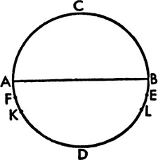
14. Enlemdeki Ay Ayrıklığının Konumları Üzerine
Takvimdeki yılların belirli başlangıçlarına göre Ay'ın hareketinin konumlarını saptayabilmek için, yukarıda aynı kesitte ya da çapa göre zıt konumlarda olmayan ancak güney ve kuzey yönünde eşit mesafelerde bulunan ve diğer bütün koşulları yerine getiren iki Ay tutulmasından bahsettik; söylediğimiz gibi Ptolemaeus'un kuralına da uygun bir şekilde bu yolla problemimizi herhangi bir hata yapmadan çözebileceğiz. Buna göre Ay'ın diğer hareketlerini incelerken yararlanmış olduğumuz ilk tutulma, Claudius Ptolemaeus tarafından Hadrianus'un 19. yılında, Chiach ayının iki günü geçtiğinde, İskenderiye'de gece yarısından önceki bir ekvatoral saatte; Krakow'da üçüncü günü takip eden gece yarısından önceki iki saatte gözlendi. Güneş, Terazi'nin 25º10'sındayken, Ay ayrıklığının konumu 64º38'yken ve eksiltici eşitleme, alçalan kesit etrafında 4º20'yken Ay, tutulmanın ortasında çapın 10/12'si kadar, yani kuzeyden 10/12 kadar tutuldu. Biz de Roma'da, İsa'dan sonra 1500 yılında, 5 Kasım'dan sonraki gece yarısından 2 saat sonra, yani 13 Kasım'dan önceki 8. gün ağarmasına denk gelen zamanda titiz gözlemler gerçekleştirdik. Fakat 5º doğudaki Krakow'da bu, gece yarısından sonraki 2,4 saate denk gelmişti; Güneş de Akrep'in 23º16'sındaydı; yine kuzeyden 10/12'lik bir tutulma gerçekleşmişti. O halde, görünen zamana göre İskender'in ölümünden itibaren 824 Mısır yılı 84 gün 14 saat 20 dakika; eşit zamana göreyse 14 saat 16 dakika geçmişti. Bu durumda Ay'ın ortalama hareketi 174º14' ve Ay ayrıklığı 294º44'ydı; fakat düzeltilmişine göre 291º35' olup 4º27'lık ekleyici eşitleme söz konusuydu. O halde her iki tutulmada da Ay'ın en yüksek apsitten mesafesi yaklaşık olarak eşitti ve her iki zamanda da Güneş ortalama apsidindeydi; dahası gölgelerin büyüklüğü de eşitti.
Bütün bunlar, Ay'ın söz konusu enleminin güneyde ve eşit olduğunu gösteriyor; buna göre Ay, kesitlerden eşit uzaklıktaydı ve ikinci tutulmada yükselirken birinci tutulmada alçalmaktaydı. O halde görünen zamana göre iki tutulma arasında 1366 Mısır yılı 358 gün 4 saat 20 dakika, eşit zamana göreyse 4 saat 24 dakika vardı; ayrıca enlemde hareket 159º55'ydı. Buna göre ABCD, Ay'ın eğik çemberi, AB de çapı ve ekliptikle ortak kesiti olsun. C kuzey, D güney sınırı; A alçalan ekliptik kesiti, B de yükselen ekliptik kesiti olsun. Bu durumda AF ve BE güneydeki iki eşit yay olarak alınsın; buna uygun olarak ilk tutulma F, ikinci tutulmaysa E noktasında gerçekleşsin. Yine FK, ilk tutulmada eksiltici; EL ise ikinci tutulmada ekleyici eşitleme olsun. Buna göre KL yayı 159º55'; FK yayı 4º20'; EL yayı da 4º27' olduğuna göre; FKLE yayı, FK, KL ve LE yaylarının toplamına, yani 168º42'ya eşittir ve 180ºnin 168º42'dan farkı 11º18'dır. Bu durumda AF yayı, BE yayına; o da 11º18'nın yarısına, yani 5º39'ya eşittir; bu da Ay'ın AB kesitinden hakiki mesafesidir; buna göre AFK yayı da 9º59'dır. Buradan hareketle enlemde K'nin ortalama konumun kuzey ucundan 99º59' uzakta olduğu anlaşılmış olur. İskender'in ölümünden bu konuma ve Ptolemaeus'un gözlemine kadar, görünen zaman 457 Mısır yılı 91 gün 10 saat; fakat eşit zamana göre 9 saat 54 dakika bulunmaktadır; bu süre boyunca enlemde ortalama konum 50º59'dır. Ve 99º59'dan 50º59' çıkarıldığında, Mısır takvimine göre geriye ilk ay olan Thoth'un ilk gününün ortası için, Krakow meridyenindeyse İskender'in yıllarının başlangıcında 49º kalır. Buna uygun olarak diğer başlangıçların her biri için, zaman farklarıyla da uyumlu bir biçimde, kendisinden hareketi ölçtüğümüz kuzey ucuna göre alınan enlemde, Ay'ın rotasındaki konumlar belirlenmiş olur. Bu durumda ilk olimpiyattan İskender'in ölümüne kadar 451 Mısır yılı 247 gün vardır; bundan zamanın eşitliği sebebiyle bir saatin 7 dakikası çıkartılır. Bu süre boyunca enlemdeki seyir 136º57'ydı. Yine ilk olimpiyattan Caesar'a kadar 780 Mısır yılı 12 saat vardı; fakat eşit zamana bir saatin 10 dakikası eklenir. Bu süre boyunca hareket 206º53'dır. Bu dönemden İsa'ya kadar ise 45 yıl 12 gün vardır. Buna göre çemberin 360º ile 49ºsinin toplamından 136º57' çıkarılırsa, geriye ilk olimpiyatın Hekatombaion ayının ilk gününün öğle vakti için 272º3' kalır. Bu durumda 272º3'ya 206º53' eklenirse, sonuç, Jülyen takviminin başlangıcında 1 Ocak'tan önceki gece yarısı için 118º56' olacaktır. En nihayetinde 10º49'lık eklemeyle sonuç, İsa takviminin başlangıcındaki konum ve yine 1 Ocak'tan önceki gece yarısı için 129º45' olur.
15. Paralaksları Gözlemleyecek Aletin Kurulumu
Fakat Ay paralakslarının tesadüfü ve engellemesi bize, Ptolemaeus'a olduğu gibi, Ay'ın en büyük enleminin, yörünge çemberi ve ekliptiğinin kesit açısıyla uyumlu olarak –çember 360º iken– 5º olduğunu deneyerek bulma fırsatını tanımadı. Zira Ptolemaeus gözlemini, kuzey kutbu tarafında 30º58'daki İskenderiye'de ve Ay, ufkun tepe noktasının yakınına gelene dek, yani hesaplamalar yoluyla önceden bilinebileceği gibi Yengeç'in başlangıcında ve kuzey ucundayken yapıyordu. O halde Ptolemaeus, paralaktikon dediği, Ay'ın paralakslarını ölçmesi için kurulan alet yardımıyla tepe noktasından en küçük mesafenin sadece 2,125º olduğunu buldu ve bu mesafede bir paralaks belirirse, kaçınılmaz olarak böylesine küçük bir uzamsal mesafede pek de büyük olmayacaktı. Buna göre 30º58'dan 2,125º çıkarılınca geriye, bu zamanda 23º51'20'' olan ekliptiğin en büyük eğimini yaklaşık olarak 5º aşan 28º50,5' kalır ve Ay için bu enlem, diğer bütün noktalara uygun olarak bulunur. Fakat paralaksları gözlemede kullanılan alet üç cetvel içermektedir; iki tanesi uzunlukça eşit ve en az 8 ya da 9 ayaktır; üçüncüsü ise onlardan daha uzundur. İlk ikisi, dikkatlice delik açılarak üçüncüsünün uçlarına eklenir; dayanak noktaları iyi yerleştirilmeli ve bu sayede cetveller düz bir zeminde hareket edebilir hale getirilmeli ama eklem yerlerinden oynamaması da sağlanmış olmalı. Bu durumda daha uzun olan cetvelde, toplam uzunluk boyunca birleşme yerinin merkezinden düz bir çizgi çizilmeli ve bu çizgi, tam olarak ölçülen diğer cetveldeki birleşim yerlerinin arasındaki mesafeye eşit olmalı. Bu çizgi 1000 ya da mümkünse daha fazla eşit birime bölünür ve kalan parça, yarıçapı 1000 birimden oluşan çember içine çizilecek karenin bir kenarı 1414 birime ulaşana dek aynı birimlere bölünmelidir. Cetvelin (gösterdiği) artan gereksiz kısmı kesmek mümkün olacaktır. Diğer cetvelde de eklem yerinin merkezinden 1000 birime ya da iki eklem yerinin merkezleri arasındaki mesafeye eşit bir çizgi çizilmeli; dioptradaki gibi, cetvelin bir tarafına bütün seyri görebilecek merceklerin tutturulmuş olması gerekir. Mercekler, cetvelin uzunluğunca çizilen çizgiden tümüyle sapmayacak şekilde ayarlanmalı; daha uzun olan cetvelin ucuna kadar uzatılan çizgi ayrılmış olan çizgiye dokunacak kadar eşit mesafede tutulmalıdır. Böylece cetveller yardımıyla tabanı bölünen çizgi boyunca uzanan bir ikizkenar üçgen elde edilir. Daha sonra en iyi şekilde ve düzgünce çaprazlama bölünen bir kutup, sert bir zeminde dikilir. İki eklem yeri olan cetvel, bu kutba dayanaklar yardımıyla takılır; alet, tıpkı sallanan bir kapı gibi bu dayanakların etrafında sallanabilir olacaktır; fakat düz çizgi böylece eklemlerin merkezi boyunca her daim cetvelin çekülüne ve ekseni olarak ufkun tepe noktasına doğru bakan noktaya uyacaktır. Buna göre bir yıldızın, ufkun tepe noktasından mesafesini bulmak isteyen biri, evvela mercekler sayesinde yıldızı düz bir çizgi boyunca tam karşısına almalı, daha sonra da cetvelin altındaki sistem sayesinde ayrılan çizgiyle birlikte, dairenin çapı 20.000 birimken, ufuk ekseni ile görüş çizgisi arasındaki açıyı birleştiren kaç birim olduğunu öğrenmelidir. Ve tablo yardımıyla, yıldızdan ve ufkun tepe noktasından geçen büyük çemberin aranan yayını elde edecektir.
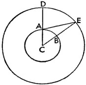
16. Ay'ın Paralaksları Nasıl Saptanır?
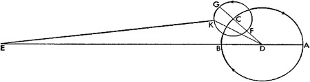
Söylediğimiz gibi, bu alet yardımıyla Ptolemaeus, Ay'ın en büyük enleminin 5º olduğunu buldu. Daha sonra paralaksı gözlemeye yöneldi ve Güneş, Terazi'nin 5º28'sında, Ay'ın Güneş'ten ortalama hareketi 78º13'dayken paralaks 1º7'ydı; düzenli ayrıklık 262º20'; enlemde hareket 354º40', ekleyici eşitleme 7º26' ve buna göre Ay'ın konumu da Oğlak'ın 3º9'sındaydı. Enlemde düzeltilmiş hareket ise 2º6', Ay'ın kuzey enlemi 4º59', ekvatordan eğimi 23º49', İskenderiye'nin enlemi 30º58'ydı. Alet yardımıyla görüldüğü gibi, Ay meridyen dairesinde ufkun tepe noktasından itibaren, yapılan hesaptan 1º7' fazla olmak üzere, yaklaşık olarak 50º45'daydı. Bu yüzden Ptolemaeus eskilerin dış merkezli çember ve dış tekerleme eğrisiyle alakalı kuralına göre, Dünya'nın yarıçapı 1p iken Ay'ın, Dünya'nın merkezinden uzaklığının 39p45' olduğunu ve çemberlerin oranından hareketle Ay'ın, yeniayda ya da dolunayda, dış tekerleme eğrisinin yerötesinde oluştuğunu söyledikleri Dünya'dan en büyük mesafesinin 64p10'; dördünlerde ve yarımayda dış tekerleme eğrisinin yerberisinde oluştuğunu söyledikleri en küçük mesafesinin ise sadece 33p33' olduğunu göstermiştir. Bunun sonucu ve bütün bunlarla alakalı olarak çizdiği esas taslakta da görmenin mümkün olduğu gibi Ptolemaeus, ufkun tepe noktasından 90º civarında oluşan paralaksların 53'34''de en küçük, 1º43'da en büyük olduğunu bulmuştu. Çoğu kere açıkladığımız gibi, bu konuda bilgi sahibi olmak isteyenler için bütün bunların tam anlamıyla birbirinden farklı olduğu açıktır. Fakat iki gözlemi yeniden ele alacağız; görünümlere uyup hiçbir şüpheye yer bırakmadıklarından, onlar sayesinde bir kez daha hipotezlerimizin Ptolemaeus'unkilerden daha doğru olduğunu ortaya koymuş olacağız. İsa'nın doğumunun 1522. yılında, 1 Ekim'den evvelki 5. günde, gün ortasından itibaren 52/3 saat sonra, Frauenburg'da günbatımı dolaylarında paralaktikon aleti yardımıyla meridyen dairesindeki Ay'ın merkezinin ufkun tepe noktasından 82º50' uzaklıkta olduğunu bulduk. Buna uygun olarak İsa takviminin başlangıcından bu saate kadar, görünen zamana göre 1522 Mısır yılı 284 gün 172/3 saat; fakat eşit zamana göre 17 saat 24 dakika vardır. O halde hesaba göre Güneş'in görünen konumu, Terazi'nin 13º29'sındaydı ve Ay'ın Güneş'ten düzenli hareketi de 87º6'; düzenli ayrıklık 357º39'; buna karşılık hakiki ayrıklık 358º40'ydı, 7' eklenmişti; buna göre Ay'ın hakiki konumu Koç'un 12º32'sındaydı. Enlemde ortalama hareket ise kuzey ucundan 197º1'; hakiki hareket 197º8'; Ay'ın güney enlemi ise 4º47'ydı; Ay, ekvatordan 27º41'lık bir eğime sahipti; gözlemimizdeki konumunun enlemi 54º19'ydı ve 54º19'nın Ay sapmasına eklenmesiyle, Ay'ın ufkun kutbundan hakiki mesafesi 82º etmişti. Buna göre 50'lık veri, Ptolemaeus'un kuramına göre 1º17' olması gereken paralaksa aitmiş gibi sayılamaz. Aynı yerde, İsa'nın doğumundan sonra 1524'te, Ağustos'un 13'ünden önceki 7. günde, gün ortasından 6 saat sonra bir gözlem daha gerçekleştirerek aynı alet sayesinde Ay'ın ufkun tepe noktasından itibaren 82ºde olduğunu gördük. Buna uygun olarak İsa takviminin başlangıcından bu saate kadar, görünen zamana göre 1524 Mısır yılı 234 gün 18 saat; kati zamana göre de 18 saat vardır. Hesaba göre Güneş'in konumu Aslan'ın 24º14'sındaydı; Ay'ın Güneş'ten ortalama hareketi 97º6'; düzenli ayrıklık 242º10'; ortalama harekete yaklaşık 7º eklenmesiyle bulunan düzeltilmiş ayrıklık 239º43'ydı. Buna göre Ay'ın hakiki konumu Yay'ın 9º39'sında; enlemin ortalama hareketi 193º19'; hakiki hareketi 200º17'; Ay'ın güney enlemi 4º41'; güney sapması 26º36'ydı; 26º36'nın gözlem yerinin enleminin 54º19'sına eklenmesi Ay'ın ufkun kutbundan mesafesini 80º55' kılmışsa da bunun 82º olduğu görülür. Buna uygun olarak Ay paralaksından 1º5'lık fark gelir; bu fark, Ptolemaeus'a göre 1º38' olmalıydı. Eskilerin teorisine göre, hipotezlerinden çıkan uyumlu oran da bunu kabule zorlar.
17. Ay'ın Dünya'dan Uzaklığı ve Bunun Dünya'nın Yarıçapını Birim Kabul Ederek Oranlarla Gösterilmesi
Buradan hareketle Ay'ın, Dünya'dan uzaklığının ne kadar olduğu gösterilmiş olacak. Bu uzaklık bilinmeden paralakslara dair kesin bir oran verilemez; zira bunlar birbiriyle alakalı. Bu yolla yapı kurulmuş olacak. AB, Dünya'nın en büyük dairesi, C de merkezi olsun. C etrafında, Dünya'nın sahip olduğu dairenin büyüklüğü göz önünde tutularak başka bir daire çizilsin ve bu daire DE olsun. D, ufkun kutbu; E de Ay'ın merkezi olsun; böylece DE'nin tepe noktasından uzaklığı bilinmiş olur. Buna göre ilk gözlemde DAE açısı 82º50'; hesaba göreyse ACE açısı 82º olduğundan; DAE açısının ACE açısından farkı, paralaksa ait olan 50'dır; ayrıca ACE üçgenini saptanan açılarıyla ve buna bağlı olarak bulunan kenarlarıyla elde etmiş oluruz. Bu durumda CAE açısı da saptandığından, AEC üçgenini çevreleyen çemberin çapı 100.000 birimken, CE kenarı 99.219 birim; AC kenarı 454 birim; Dünya'nın AC yarıçapı, 1p iken, CE kenarı yaklaşık olarak 68pdir. Ve bu, ilk gözlemde Ay'ın Dünya'nın merkezinden uzaklığıydı. Fakat ikinci gözlemde görünen hareket olarak DAE açısı 81º55'; hesaba göre ACE açısı 80º55'; çıkarmayla AEC açısı 1º5'dır.
Buna uygun olarak EC kenarı 99.027 birimken; üçgeni çevreleyen dairenin çapının 100.000 birim olduğu yerde AC kenarı 1747 birimdir. Ve bu yüzden, Dünya'nın yarıçapı 1p iken, CE 56p41'dır. Ve bu, Ay'ın uzaklığıdır.
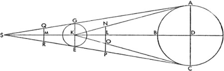
Fakat ABC, Ay'ın daha büyük dış tekerleme eğrisi; D de bunun merkezi olsun. E, Dünya'nın merkezi olarak alınsın; E'den EBDA düz çizgisi çizilsin; buna göre A yeröte, B de yerberi olsun. Bu durumda, Ay ayrıklığının hesap edilen düzenliliğine de uygun olarak ABC yayı 242º10'dır. Ve merkezi C olan FGK dış tekerleme eğrisi çizilsin; FGK yayı da, Ay'ın Güneş'ten mesafesinin iki katı olarak 194º12'dır. Buna DK de eklendiğinde 2º30'lık ayrıklık elde edilir; KDB ise düzeltilmiş ayrıklık olarak 59º40'; CDB 62º10'; BEK açısı ise 7ºdir. Buna göre iki dik açı 180ºyi verirken KDE üçgeninde açılar ve kenarların oranı bulunur: KDE üçgenini çevreleyen çemberin çapı 100.000 birimken; DE, 91.821; EK, 86.310 birimdir. Fakat DE, 100.000 birimken; KE, 93.998 birimdir. Bu durumda yukarıda DF'nin 8600, DFG'nin ise 13.340 birim olduğu gösterilmiş olur. Buna uygun olarak, gösterildiği gibi, belirlenen orandan hareketle Dünya'nın yarıçapı 1p iken, EK, 56p42'; ve düz bir çizgi olarak uzatıldığında DE, 60p18'; DF, 5p11'; DFG, 8p2'dır; EDG, 68,3p'ye eşittir; bu da yarımayın en büyük yüksekliği demektir. Dahası DG'nin ED'den farkı, en küçük mesafe olan 52º17'dır. Ve böylece, en büyük mesafede de olduğu gibi EDF, 65,5p'ye eşittir; bu da dolunay aydınlığında beliren yüksekliktir; en az yükseklikte ise DF'nin EDF'den farkı 55p8'dır. Yeniayın ve dolunayın en büyük mesafesinin 64p10' olduğunu düşünenlere kanıp hareket etmemeliyiz; zira onlar özellikle de konumlarının durumundan dolayı Ay paralakslarını kısmen bilebilmişti. Fakat paralaksların ufka göre büyüdüğü açık olduğuna göre, Ay'ın ufka daha yakın olması onları daha iyi fark etmemizi sağlar; oysa paralaksların, Ay'ın ufka yakınlığından kaynaklanan farka göre 1'dan daha farklı olmadığını bulduk.
18. Ay'ın ve Yeryüzünden Geçtiği Yerdeki Gölgesinin Çapı Üzerine
Ayrıca Ay'ın ve gölgesinin görünen çapları, Ay'ın Dünya'dan uzaklığına göre farklılık gösterir. Bu yüzden onlardan bahsetmek yerinde olur. Hipparchus'un dioptrasıyla Güneş'in ve Ay'ın çapları doğru bir şekilde hesaplanabilirse de, gökbilimciler Ay'ınkiyle ilgili olarak kimi Ay tutulmaları sayesinde bu hesabın daha kesin bir şekilde yapılabileceğini düşünmüştür; söz konusu tutulmalarda, özellikle Güneş de aynı konumda yer alıyorsa, Ay en yüksekteki ve en alçaktaki apsitlerinden eşit uzaklıkta bulunur; tutulmalar uzunlukça düzensiz değilse, Ay'ın yarattığı gölgenin dairesi de eşit olarak bulunur. Buna göre tutulmalardaki uzunluk farkının Ay'ın enlemiyle karşılaştırılmasıyla Ay'ın çapının, Dünya'nın merkezinin etrafındaki dairenin ne kadarını ayırdığının anlaşılacağı da açıktır. Bu anlaşıldığında, gölgenin yarıçapı da bilinmiş olacaktır. Bütün bunlar bir örnekle daha açık hale gelir. Bu şekilde ilk tutulmanın orta noktasında Ay'ın çapının 3/12'si tutulurken Ay 47'54''lik bir enleme sahipti; oysa diğer tutulmada aynı çapın 10/12'si tutulurken aynı enlem 29'37''ydi. Tutulmaların uzunlukları arasındaki fark, çapın 7/12'si; enlemdeki fark ise 18'17'' kadardır; 12 ölçü de Ay'ın çapının ayırdığı 31'20''yle orantılıdır. Buna göre, ilk tutulmanın orta noktasında Ay'ın merkezinin, Ay'ın çapının yaklaşık dörtte biri –ya da enlemin 7'50''si– kadar gölgenin ötesinde olduğu açıktır. 7'50'', toplam enlemin 47'54''sinden çıkarılırsa, geriye gölgenin yarıçapı olarak 40'4'' kalır; diğer tutulmada ortaya çıkan gölge –Ay'ın çapının 1/3'üne oranla– Ay'ın merkezinin enleminden 10'27'' kadar fazladır. 29'37''nin 10'27''ye eklenmesiyle benzer şekilde gölgenin yarıçapı 40'4'' olur. Ve böylece Ptolemaeus'un vardığı sonuçla da uyumlu olarak, Güneş ve Ay'ın Dünya'dan en uzak mesafelerindeki kavuşumlarında ve karşı konumlarında, Ay'ın yarıçapı 31'20'' kadardır; zira Ptolemaeus, Hipparchus'un dioptrasıyla Güneş'in çapını bulduğunu söylemiş ve gölgenin çapının 1º21'20'', çaplar arasında da 5/13'lük, yani 2,6'lık bir oran olduğuna inanmıştır.
19. Güneş'in ve Ay'ın Dünya'dan Uzaklığı, Çapları ve Ay'ın Geçişi Sırasında Gölgenin Çapıyla Ekseni Aynı Anda Nasıl Gösterilir?
Güneş'in de biraz paralaksı vardır ve çok belirsiz olduğundan, birbiriyle alakalı şunlar dışında kolayca seçilemez: Güneş'in ve Ay'ın Dünya'dan uzaklığı, çapları, Ay'ın geçtiği yerde gölgenin çapı ve gölgenin ekseni. Analitik gösterimlerde bunlardan biri diğerini karşılıklı olarak verir. Evvela Ptolemaeus'un bu konularda vardığı sonuçları ve onları nasıl kanıtladığını ele alıp daha sonra aralarından en doğrularını çıkartacağız. Ptolemaeus, kayıtsız şartsız kullandığı, Güneş'in görünen çapını 31 1/3' olarak alıp yeniayın ve dolunayın çapının, söylediğine göre Dünya'nın yarıçapı 1p iken 64p10'lık uzaklıktaki yerötede, eşit olduğunu düşündü. Buradan hareketle geri kalanı da şu şekilde kanıtladı: ABC, D merkezi etrafındaki Güneş küresinin çemberi; EFG de Güneş'ten en uzun mesafede, K merkezi etrafındaki yeryüzü küresinin çemberi olsun. AG ve CE her iki çembere de teğet düz çizgiler olsun; bu iki çizgi S noktası olarak belirlenen gölgenin ucunda birleşecek şekilde uzatılsın. DKS, Güneş ile Dünya'nın merkezleri boyunca uzanan bir çizgi olsun. Dahası AK ve KC çizilsin; aralarındaki çok büyük mesafeden ötürü çaplardan çok az farklılaşan AC ve GE de eklensin.
Bu durumda DKS'de LK ve KM dilimleri, yeniay ve dolunay zamanında Ay'ın yerötedeki uzaklığıyla, yani Ptolemaeus'a göre EK 1p iken, 64p10'yla orantılı olarak eşit alınsın. QMR, Ay'ın geçişindeki gölgenin çapı olsun ve NLO da Ay'ın DK'ye dik olan çapı olsun ve LOP olarak uzatılsın. İlk problem bulunmuş olur: DK'nin KE'ye oranı. Buna göre, NKD açısı, dört dik açı 360ºyi verirken, 31,3' olduğundan LKO açısı, NKO açısının yarısına; LKO açısı da 152/3'ya eşittir. L açısı 90ºdir. Buna göre açıları belirlenen LKO üçgeninde, KL'nin LO'ya oranı da bulunur; LO, 17p33'ya; KE 1p iken, LK, 64p10'ya eşittir. Buna göre LO'nun MR'ye oranı, 5'in 13'e oranına eşittir; MR, 45'38''dir. Fakat LOP ile MR, eşit aralıklarda KE'ye paralel olduğundan, buna göre LOP ile MR'nin toplamı KE'nin iki katına eşittir. Ve OP, LOP'nin MR ile LO'nun toplamından farkına, yani 56'49''ye eşittir. Bu durumda, Euclides'in altıncı kitabının II. bölümünde de gösterildiği gibi, EC'nin PC'ye oranı, KC'nin OC'ye oranına; o da KD'nin LD'ye oranına eşittir; dahası o da KE'nin OP'ye oranına, yani 60'nın 56'49''ye oranına eşittir. Buna göre DLK 1p iken, LD, 56'49''dir. Ve bu durumda çıkarmayla KL, 3'11''dir. Fakat FK 1p iken, KL, 64p10' olduğuna göre KD, 1210p'dir. Buna göre MR'nin 45'38''ye eşit olduğu da açıktır. Buradan hareketle KE'nin MR'ye oranı ve KMS'nin MS'ye oranı bulunmuş olur. Bütün KMS için KM, 14'22''dir. Ayrı olarak, KM 64p10' iken, KMS 268p'dir. Bütün bunlar Ptolemaeus'a göre tümüyle böyledir. Fakat Ptolemaeus'tan sonrakiler, bütün bunların görünümlere tam anlamıyla uymadığını bulduklarından, bunlarla alakalı olarak başka veriler sunmuşlarsa da yine de yeniayın ve dolunayın Dünya'dan en büyük mesafesinin 64p10' ve Güneş'in yerötede görünen çapının 31,3' olduğunu kabul etmişlerdi. Hatta Ay'ın geçtiği yerde gölgenin çapının, tıpkı Ptolemaeus gibi, 13/5 kadar olduğunu kabul etmişler; fakat bu zamanda, Ay'ın görünen çapının 29,5'dan büyük olduğunu reddetmişler; bu yüzden gölgenin çapını yaklaşık 1º16,75' olarak belirlemişlerdi. Buradan hareketle yerötede Güneş'in Dünya'dan uzaklığının 1146p; gölgenin ekseninin ise, Dünya'nın yarıçapı 1p iken 254p olduğunu söylemişlerdi ve gökbilimciler, her ne kadar hepsi bir araya getirilemese de, bütün bu verileri kâşif filozof Arataeus'a[154] mal ettiler. Biz de bütün bunların şu şekilde ayarlanması ve düzeltilmesi gerektiğini düşündük: Güneş'in yerötesindeki görünen çapını 31'40''ye yerleştirdik, öyle ki bu Ptolemaeus'tan önceki veriden daha büyük olmalı; dahası dolunayın ve yeniayın en yüksek apsitteki görünen çapı 30'; gölgenin çapı ise geçtiği noktada 80,6'daydı. Gökbilimciler 5/13'ten biraz daha fazla, yani 150/403 gibi bir oran elde etmişlerdi. Dünya'nın yarıçapı 1p iken, Ay'ın Dünya'dan mesafesi 62p'den daha küçük olmadıkça Güneş, bütünüyle Ay'la örtülemez. Bütün bu veriler bu şekilde tahmin edilirken, diğer hesaplamalar da kesin bir şekilde birbiriyle alakalı olup görünen Güneş ve Ay tutulmalarına da uyar. Yukarıdaki kanıtlamaya uygun olarak Dünya'nın yarıçapı KE 1p iken, LO 17'85''dir. Bu yüzden MR, 46'1''; OP, 56'51''; Güneş'in yerötede Dünya'dan uzaklığı DLK 1179p; gölgenin ekseni, yani KMS de 265 birimdir.
20. Üç Göksel Cismin; Güneş'in, Ay'ın ve Dünya'nın Büyüklüğü ve Birbirleriyle Karşılaştırılması Üzerine
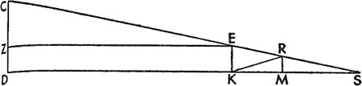
Sonuç olarak LK'nin KD'ye oranının 1'in 18'e oranına; LO'nun DC'ye oranının da 1'in 18'e oranına eşit olduğu açıktır. O halde bu durumda, KE 1p iken, 1'in 18'e oranı, 17'8''nin 5p27'ya oranına eşittir. Ve SK'nin KE'ye oranı, 265p'nin 1p'ye oranına; o da SKD'nin DC'ye oranına, yani 1444p'nin 5p27'ya oranına eşittir. Buna göre hepsi birbiriyle orantılı olup, en nihayetinde bu, Güneş'in ve Ay'ın çaplarının oranını verecektir. Fakat küreler çaplarının küpüyle orantılı olduğundan; buna göre 5p27'nın küpü, 161,875p'ye eşittir ve Güneş, yeryüzü küresinden 161 7/8 kat daha büyüktür. Yine Ay'ın yarıçapı, KE 1p iken, 17'9'' kadardır. Dünya'nın çapının Ay'ın çapına oranı, 7'nin 2'ye oranına, yani 3,5'luk orana eşittir. Bu oranın küpü dikkate alındığında Dünya'nın Ay'dan 42 7/8 kat büyük olduğu anlaşılır. Buradan hareketle Güneş de Ay'dan 699962/63 kat büyük olacaktır.
21. Güneş'in Görünen Çapı ve Paralaksları Üzerine
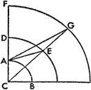
Fakat aynı büyüklükler, cisimler uzaklaştıkça yakınken olduğundan daha küçük görünür; bu nedenle Güneş ve Ay ile Dünya'nın gölgesi Dünya'dan eşit olmayan uzaklıklarıyla en az paralaksları kadar değişiklik gösterir. Yukarıda dile getirdiğimiz gibi, herhangi bir uzanım için bütün bunlar kolayca hesaplanabilir. Evvela Güneş'in durumu ortaya konur. Dünya'nın Güneş'ten en uzak mesafesinin, yıllık devinime özgü yörünge çemberinin yarıçapı 10.000 birimken, 10.323 birim; en yakın mesafesinin ise, çapın geri kalan kısmı için 9678 birim olduğunu gösterdiğimiz için; buna göre en yüksek apsit, Dünya'nın yarıçapı 1p iken 1179p, en alçak apsit ise 1105p, ortalama apsit de 1142p olacaktır. O halde dik üçgende 1.000.000'un 1179'a oranı 848'e; o da 2'55''nin iki katını ayıran kirişin yarısına eşittir. Bu en büyük paralaksın küçük açısıdır ve ufkun civarında bulunur. Benzer şekilde, en küçük mesafe 1105p olduğundan, 1.000.000'un 1105'ten farkı 905'e; o da 3'77''nin iki katını ayıran kirişin yarısına eşittir; 3'77'', en alçak apsitteki en büyük paralaksın açısını verir. Böylece Dünya'nın çapı 1p iken, Güneş'in çapının 5p27' olduğu ve en yüksek apsitte 31'48'' olarak göründüğü gösterilmiş olur. Buna göre dairenin çapı 2.000.000 birimken, 1179p'nin 5p27'ya oranı, 2.000.000'un 9245'e oranına eşittir. Buna ek olarak 1105p'lik en küçük mesafede 33'54''lik görünen bir çap söz konusudur. O halde bunlar arasındaki fark 2'6'' kadardır; fakat paralakslar arasında yalnızca 12''lik bir fark vardır. Ptolemaeus, bu farkların her ikisinin de küçüklüklerinden ötürü göz ardı edilmesi gerektiğini düşünmüştü; zira 1' ya da 2', kolayca algılanabilecek farklar değildir; saniyeler mertebesinde olduğundan ayırt edilmesi zordur. Bu yüzden Güneş'in en büyük paralaksını her yerde 3'da tutarsak, hiç hata yapmadığımızı görmüş olacağız. Buna göre Güneş'in ortalama çaplarını onun ortalama uzaklıklarından ya da başkalarının yaptığı gibi, Güneş'in görünen saatlik hareketini kullanarak çapın 66'ya 5 ya da 14,2'ye 1 oranında olduğunu düşünerek saptayacağız. Buna göre saatlik hareketi, yaklaşık olarak uzaklığıyla orantılıdır.
22. Ay'ın Eşit Olmayan Görünen Çapı ve Paralaksları Üzerine
Dünya'ya en yakın gezegen olan Ay'ın görünen çapı ile paralaksları arasında daha büyük bir ayrım göze çarpıyor. Buna göre Ay'ın Dünya'dan en büyük mesafesi, yeniayda ve dolunayda 65,5p olduğundan, yukarıdaki gösterimlere göre en küçük mesafesi 55p5'; en büyük enlemsel uzanım 68p21'; en küçük uzanım ise 52p17' olacaktır. Buna uygun olarak çemberin yarıçapını Ay'ın Dünya'dan uzaklıklarına böldüğümüzde, şu dört sınırda doğan ve batan Ay'ın paralakslarını elde etmiş olacağız: En uzaktaki yarımayın paralaksı 50'18''; en uzaktaki yeniayın ve dolunayın paralaksı 52'24''; en yakın dolunayın ve yeniayın paralaksı 62'21'' ve en yakın yarımayın paralaksı ise 65'45'' olacaktır. Dahası, bu sayede Ay'ın görünen çapları da belirlenir. Zira Dünya'nın çapının Ay'ın çapına oranının 7'ye 2 olduğu gösterildiğinden, Dünya'nın yarıçapının Ay'ın çapına oranı 7'ye 4 olacaktır. Ayrıca Ay'ın paralaksları ile görünen çapları arasında böyle bir oran vardır; zira daha büyük paralaksların açılarını oluşturan düz çizgiler Ay'ın aynı geçişinde görünen çaplardan tam anlamıyla ayrılmaz ve açılar onları ayıran kirişlerle aşağı yukarı orantılı olup aralarındaki fark algılanabilir değildir. Bu özetle birlikte, Ay'ın görünen çapı için ortaya konmuş olan paralaksların ilk sınırı 28,75'; ikinci sınırı yaklaşık olarak 30'; üçüncü sınırı 35'38'' ve son sınırı 37'34'' olur. Ptolemaeus ve diğerlerinin hipotezine göre çap yaklaşık olarak 1º olmalıydı; yarımay bu anda Dünya üzerine dolunay kadar ışık yansıttığı için bunun böyle olması gerekirdi.
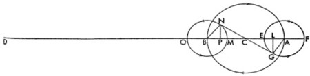
23. Dünya'nın Gölgeleri Arasındaki Fark Oranı
Gölgenin çapının, Ay'ın çapına oranının 403'ün 150'ye oranına eşit olduğunu zaten göstermiştik. Bu nedenle dolunayda ya da yeniayda, Güneş yerötedeyken gölgenin farkının en az 80'36''; en çok 95'44'' olduğu bulunmuştu; buna göre en büyük fark 15'8''dir. Dahası Dünya'nın gölgesi, Ay'ın aynı geçişinde bile Dünya'nın Güneş'ten düzensiz uzaklığına göre, şu şekilde farklılık gösterir: Önceki şekilde olduğu gibi, yine Dünya'nın ve Güneş'in merkezlerinden geçen DKS düz çizgisi çizilsin; CES de teğet çizgisi olsun. Gösterildiği gibi, KE 1p ve KM 62p, DK mesafesi 179p olur; sonra gölgenin yarıçapı MR, KE 1p iken, 46'1''; KR'nin eklenmesiyle görüş açısı MKR 42'32''; gölgenin ekseni KMS ise 265p olur.
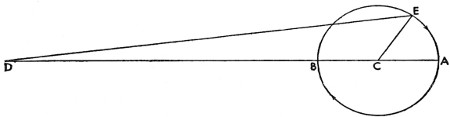
Bu durumda Dünya, Güneş'e en yakın konumda ve DK 1105p'ye eşitken Dünya'nın gölgesini, Ay'ın aynı geçişinde şu şekilde ölçeceğiz: EZ, DK'ye paralel olarak çizilsin. Bu durumda CZ'nin ZE'ye oranı, EK'nin KS'ye oranına eşit olur. Fakat CZ, 4p27'; ZE, 1105p'dir. Buna göre KZ paralelkenar olduğundan ZE, DK'ye; DZ de KE'ye eşittir. Buna uygun olarak KE 1p iken, KS, 248p19'dır. O halde KM 62 birimdir; yapılan çıkarmayla MS de 186p19' olur. Fakat SM'nin MR'ye oranı, SK'nin KE'ye oranına eşit olduğundan; bu durumda KE 1p iken, MR 45'1''dir. Ve buradan hareketle görüş açısı MKR 41'35''dir. Bu, Güneş ile Dünya'nın yaklaşması ve uzaklaşmasına bağlı olarak geliştiği için, dört dik açı 360ºyi verirken, 57''lik görüş açısıyla orantılı olarak EK 1p iken, Ay'ın aynı geçiş yerinde gölgenin çaplarındaki en büyük fark 1'dır. Dahası 13'ün 5'e oranı ortalama olduğuna göre ilk durumda gölgenin çapının Ay'ın çapına oranı, 13'ün 5'e oranından büyükse de; burada gölgenin çapının Ay'ın çapına oranı 13'ün 5'e oranından küçüktür. O halde bu oranı her yerde kullanırsak, eskilerin çabasını göz önünde tutup daha az çaba harcayacak, ancak çok belirsiz de olsa bir hata yapmış olacağız.
24. Ufkun Kutupları Boyunca Geçen Çemberdeki Hususi Paralakslar Tablosu Üzerine
Dahası, Güneş'in ve Ay'ın bütün tekil paralakslarını belirlemek de bu noktada zor olmayacak. Bunun için yine ufkun başından itibaren, merkezi C olan bir AB yeryüzü dairesi çizilsin.
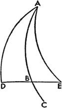
Ve aynı düzlemde DE, Ay'ın; FG, Güneş'in yörünge dairesi; CDF, ufkun tepesinden itibaren çizilen çizgi olsun. Güneş'in ve Ay'ın hakiki konumlarının anlaşıldığı CEG çizgisi çizilsin ve AG ile AE görüş çizgileri de bu noktalara eklensin. Böylece Güneş'in paralaksları AGC açısıyla, Ay'ın paralaksları ise AEC açısıyla ölçülebilir. Dahası Güneş ile Ay arasında GAE açısıyla ölçülebilen, AGC ve AEC açıları arasındaki farka göre saptanabilen bir paralaks daha vardır. Bunun için ACG açısını, karşılaştırmak istediğimiz açılarla birlikte ele alalım; örneğin ACG açısı 30º olsun. Düzlemsel üçgenlerle ilgili olarak da gösterdiğimiz gibi, AC'nin 1p olduğu yerde CG kenarı 1142p'ye eşitken, Güneş'in hakiki ve görünen enlemi arasındaki fark olan AGC açısı 1,5'dır. Fakat ACG açısı 60º iken, AGC açısı 2'36''dir. Diğer açılarla ilgili de bütün hesap aynı şekilde olacaktır. Fakat dört sınırda Ay'la ilgili durum söz konusu olduğunda: Ay'ın Dünya'dan en uzak mesafesinde, söylediğimiz gibi, CA 1p iken CE 68p21'; dört dik açı 360ºyi verirken DCE açısı 30º ise, ACE açısıyla birlikte AC ve CE kenarlarının bilindiği ACE üçgenini elde etmiş oluruz. Buradan AEC paralaksının 25'28'' olduğunu buluruz. CE, 65,5p iken AEC açısı 26'36''dir. Benzer şekilde üçüncü durumda CE 55p8' iken, AEC paralaksı 31'42''dir. Sonuç olarak en kısa mesafede CE 52p17' iken, AEC açısı 33'27''dir. Yine DE yayı 60ºye eşitken, aynı düzende paralakslar şu şekilde olacaktır: İlk paralaks 43'55''; ikinci paralaks 45'51''; üçüncü paralaks 54,5'; dördüncü paralaks ise 57,5' olacaktır. Bütün bunları, kullanımı kolay olsun diye ilişikteki tablo düzeniyle aktaracağız; diğer tablolar gibi bunu da 30 satırdan oluşan bir düzene sokacağız. Fakat her sırada 6º artış gösteren, en büyüğü 90º olan ufkun tepe noktasından ölçülen yayların iki katı verilecek. Tabloyu dokuz sütuna böldük. Buna göre birinci ve ikinci sütunda daireye dair genel sayılar bulunacak. Üçüncü sütuna Güneş'in, dördüncü sütuna Ay'ın paralakslarını; beşinci sütuna farkları yerleştireceğiz. Bu farklara göre, yarımayda ve yerötede beliren en küçük paralakslar, dolunayın veya yeniayın yerötesinde beliren paralakslarla ölçüldüğü kadarıyla eksiktir. Altıncı sütun, dolunay ya da parlak Ay'ın yerberide neden olduğu paralaksları içerir. Bir sonraki sütunda farklara ait dakikalar yer alır; bunlara göre Ay'ın bize en yakın olduğu anda yarımayda beliren paralakslar kendilerine daha yakın olan paralaksları aşar. Sonra orantılı dakikalara ayrılan iki boşlukla bu dört sınır arasındaki paralakslar hesap edilebilir. Evvela yeröteyle ilgili olup bu şekilde ilk sınırların arasındaki paralaksları ortaya koyacağız. AB dairesi, Ay'ın ilk dış tekerleme eğrisi; C de bunun merkezi olsun. Dünya'nın merkezi olarak D'nin alındığı DBCA düz çizgisi ve A'daki yerötenin merkez olduğu ikinci EFG dış tekerleme eğrisi çizilsin. Buna göre EG yayı 60º olsun ve AG ile CG de eklensin. Buna uygun olarak önceden de gösterildiği gibi, Dünya'nın yarıçapı 1p iken, CE düz çizgisi 5p11'; DC düz çizgisi 60p18'; EF düz çizgisi 2p51'; ACG üçgeninde GA kenarı 1p25'; AC kenarı 6p36' olur ve GA ile AC tarafından oluşturulan CAG açısı bulunur.
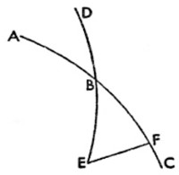
Buna göre düzlemsel üçgenlerle alakalı olarak da gösterildiği gibi, CG kenarı 6p7'dır. Buna uygun olarak, düz bir çizgi boyunca uzatılan DCG, DCL'ye; o da 66p25'ya eşittir. Fakat DCE 65,5p'dir. O halde çıkarmayla EL, yaklaşık 55,5'dır, yani fazlalıktır. Dahası saptanan bu orana göre DCE 60p iken, EF, 2p37'; EL 46'dır. O halde EF 60'ya eşit olduğundan, fazlalık olan EL yaklaşık 18'dır. Bunları 60ºye karşılık gelecek şekilde tablonun sekizinci sütununa yazacağız. Benzer bir durumu B yerberisiyle ilgili olarak da göstereceğiz. Yine, B merkezi etrafında ikinci MNO dış tekerleme eğrisi çizilsin; MBN açısı da 60º olsun. Buna göre, daha önce de gösterildiği gibi, BCN üçgeni kenarları ve açılarıyla bulunmuş olacak; benzer şekilde MP fazlalığı, Dünya'nın yarıçapı 1p iken 55,5' olacaktır. Zira DBM 55p8'dır. DBM, 60p olursa, MBO 3p7'; MP fazlalığı ise 55' olur. Bu durumda 3p7'nın 55'ya oranı, 60'nın 18'ya oranına eşittir ve bu, yukarıdakine benzer şekilde, böyle devam eder. Bununla birlikte birkaç saniyelik bir fark da söz konusudur. Diğerleri için de aynı yöntemi uygulayarak tablonun sekizinci sütununu doldurmuş olacağız. Fakat bunların yerine eşitlemeler tablosunda ortaya konan orantılı dakikaları kullanırsak hata yapmış olmayız. Zira bunlar üç aşağı beş yukarı aynı olduğundan; mesele çok küçük rakamlar üzerinedir. Geriye ortalama sınırlarda, ikinci ile üçüncü sınırlar arasında beliren orantılı dakikalar kalıyor. Bunun için AB, yeniaydaki ve dolunaydaki ilk dış tekerleme eğrisi, C de bunun merkezi olsun; D, Dünya'nın merkezi olarak alınsın ve DBCA düz çizgisi uzatılsın.
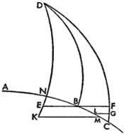
Bu durumda A yerötesinden bir yay alınsın; örneğin AE yayı, 60ºye eşit olsun; DE ve CE eklensin. Bu durumda iki kenarı bilinen DCE üçgenini elde etmiş oluruz: CD, 60p19'; CE, 5p11'dır. Buna göre DCE bir iç açıdır ve DCE açısı 180ºnin ACE açısından farkına eşittir. Buna uygun olarak, üçgenlerle ilgili olarak gösterildiği gibi DE, 63p4'dır. Fakat DBA, 65,5p olup DBA'nın ED'den farkı 2p26'dır. Buna göre AB, 10p22'dır; 10p22'nın 2p26'ya oranı da 60'nın 14'ya oranına eşittir. Bunlar tabloda dokuzuncu sütunda, 60ºnin karşısında gösterilir. Bu örneği izleyip diğerlerini de tamamlayarak tabloyu, aşağıdaki gibi doldurmuş oluyoruz. El altında kolayca bulunabilsinler diye Güneş'in, Ay'ın ve Dünya'nın gölgesinin yarıçapları tablosunu da ekliyoruz.